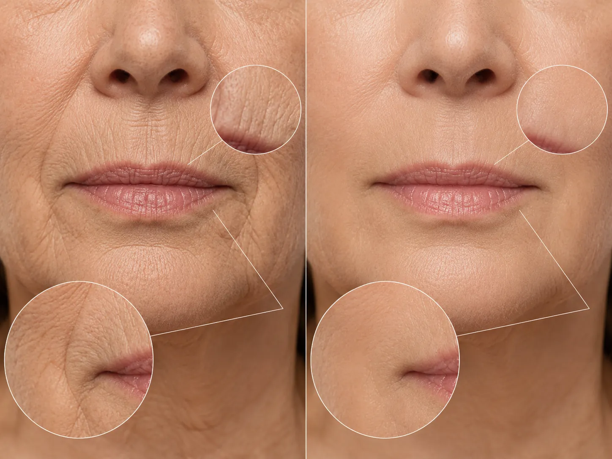
Women all over America are calling this a Facelift in a Jar. That this daily ritual is all they need to have smoother, firmer skin on their face.
Skincare has never been more advanced than it is right now.
More "breakthroughs." More "miracle" ingredients. More serums, creams, and high-tech treatments than any generation of women has ever had access to.
Yet, more women than ever are watching their skin sag, wrinkle, and turn thin and crepey — and it's happening earlier than it did for their mothers or grandmothers.
So why — even with all this technology — are lines, sagging, and crepey skin showing up nearly a decade sooner than they used to?
Here’s the frustrating truth the beauty industry rarely tells you:
Most creams and serums only target what you can see on the surface.
But when the real reason your skin isn’t changing lies deeper, adding another product to your routine won’t solve it.
It’s like trying to paint a wall that’s infested with termites.
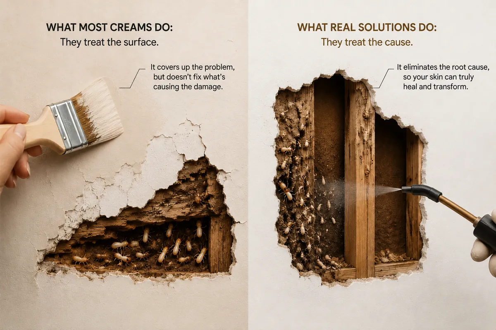
That’s why you can spend months testing cream after cream and serum after serum — watching every jar run empty while the same lines, spots, and uneven texture keep staring back at you in the mirror.
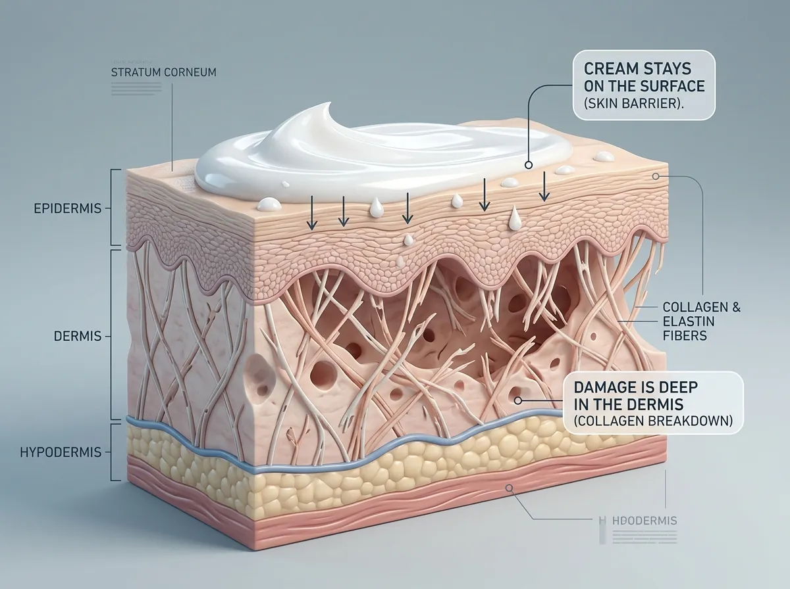
You've probably felt it yourself.
If you're in your 40s or beyond, you've had that moment in front of the mirror, catching your reflection and thinking your face is changing faster than it should.
The jawline a little softer. Lines around the mouth that weren't there last year. Skin that suddenly looks thinner, tired, less like you.
That's not your imagination. And it isn't "just getting older."
For women, there's one event that speeds all of it up at once: perimenopause.
When your hormones shift, your body quietly changes what it spends its energy on: bone, brain, mood, the things it decides you need to survive.
And your face? It drops straight to the bottom of that list. The result shows up on your skin faster than almost anything else.
And the women living it describe it the same way, over and over:
"I looked in the mirror and didn't recognize myself."
— Karen M., 52
"I look ten years older than I feel inside."
— Susan R., 49
"People started calling me 'ma'am' — and it broke something in me."
— Linda T., 56
"I stopped wanting to be in photos. I felt like I was disappearing."
— Deborah K., 58
That's Why I'm Excited To Share This New Breakthrough With You.
We've already helped 17,000 women get their firmer, younger-looking skin back — women of every age, many of whom had completely given up hope.
And here's what they discovered:
To get that transformation yourself…
- You do not need invasive surgery.
- You do not need painful injections.
- You do not need expensive laser treatments.
And you do not need $500 creams. What you DO need is to understand one.
Just one thing about what perimenopause actually did to your face.
Because once you understand it, getting your firm, smooth skin back becomes surprisingly simple.
The one thing you need to understand is this: your skin didn’t just "get older." Its foundation is collapsing.
Let me explain — because once you see it, you can’t unsee it.
Think of your skin like a building.
What keeps a building standing isn’t the paint on the walls — it’s the foundation and the beams underneath.
In your skin, that structure is a dense web of collagen woven deep in the dermis. It’s what holds your face firm, smooth, and lifted. It’s the reason young skin looks "full" and springs back when you press it.
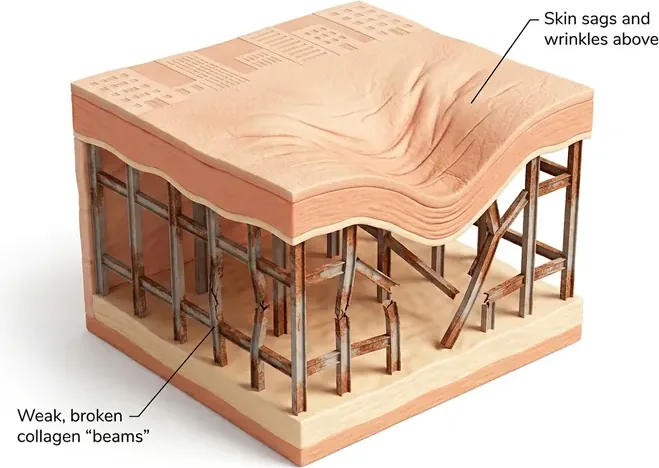
And during menopause, two things happen to that foundation at the same time.
Together, they can dramatically accelerate the visible signs of aging.
First, the demolition speeds up.
Collagen is produced by specialized cells called fibroblasts — and estrogen plays an important role in keeping those cells active.
As estrogen levels decline, fibroblasts begin producing less new collagen.
But the collagen already supporting your skin continues to break down through natural aging, sun exposure, and collagen-degrading enzymes.
In other words, the building blocks are disappearing faster than your body can replace them.
The structure beneath your skin becomes thinner, weaker, and less supportive — and the changes you see in the mirror can begin to appear much faster.
That’s why the research is so striking.
Studies suggest that women may lose as much as 30% of their skin’s collagen during the first five years of menopause, followed by a continued decline of roughly 2% per year.
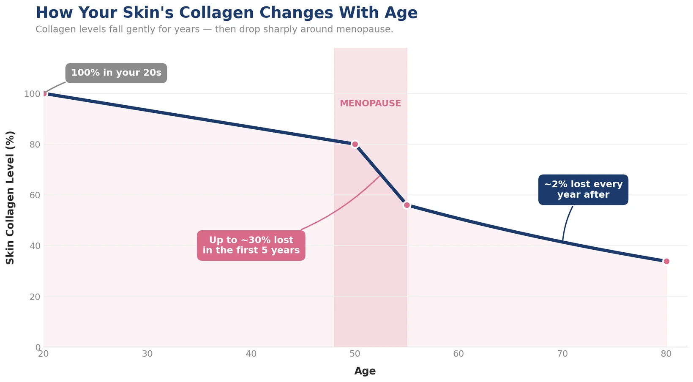
But here’s the part almost nobody explains — and it’s the reason nothing you’ve tried has worked.
Second, the construction crew has retired.
You’ve probably thought, "If I’m losing collagen, I’ll just take collagen." It makes sense.
But swallowing collagen does not put collagen on your face.
Your body doesn’t use collagen as-is.
The moment you eat it, it gets broken down into tiny pieces called amino acids and peptides.
To turn those pieces back into real, structural collagen in your skin, your body has to rebuild them.
And rebuilding requires a full construction kit: vitamin C (without it, your body physically cannot form collagen), the right amino acids, and other cofactors.
And with age and menopause, your body makes less and less of it.
So this is what actually happens when you take an ordinary collagen:
You hand your body the elements to rebuild your skin.
Your body breaks that collagen down — but never rebuilds it.
The pieces just get burned for energy like any other protein and disappear.
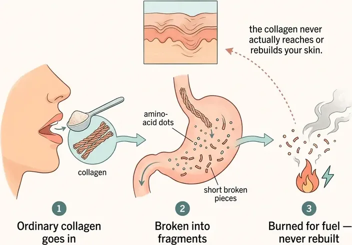
It’s like buying all the materials to build a house — and never hiring anyone to build it.
This is why everything else you tried, fails:
Creams and serums paint the walls.
The molecules are far too big to sink in — they sit on the surface and never reach the dermis, where the foundation is actually crumbling.
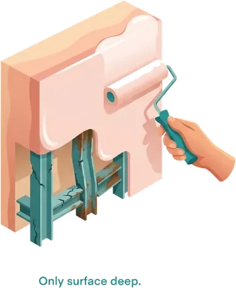
Single-source collagen.
That’s what’s in almost every tub on the shelf.
It gives you one kind of collagen — the brick (usually bovine, Type I) — with none of the cofactors.
Even if some is absorbed, there’s no one to rebuild it. That’s why you "didn’t feel any difference in your face."
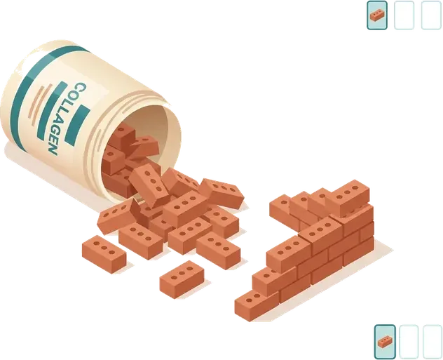
Injectables and procedures.
Expensive, invasive, and they patch one spot at a time — while the foundation everywhere else keeps caving in.
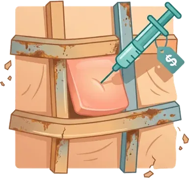
And here’s the cruelest part.
A foundation can lose a few bricks and still stand… up to a point.
For years, your skin quietly compensates and you don’t notice a thing. But every foundation has a tipping point.
And once you pass it, the structure doesn’t sag gently.
It gives way all at once.
That’s why so many women say the same thing: "My face changed overnight."
It’s not your imagination. It’s not vanity. It’s the structure finally giving out — and it happens fast.
So the real problem was never that you weren’t putting collagen in. It’s that your body has lost the ability to rebuild it.
And until you fix that, nothing you smear on, inject, or swallow will hold.
The collapse of your skin doesn’t wait for you to be ready.
Your skin’s foundation doesn’t hold where it is while you think it over.
Every single month, more of that collagen structure quietly gives way — and nothing is coming in behind it to rebuild. This is the one problem that never fixes itself.
Left alone, it doesn’t slow down. It speeds up — and it happens in three stages.
Most women are further along than they realize.
It starts quietly in perimenopause — often in your early 40s. You still cover them with a good night’s sleep and better lighting, and you tell yourself everything’s fine.
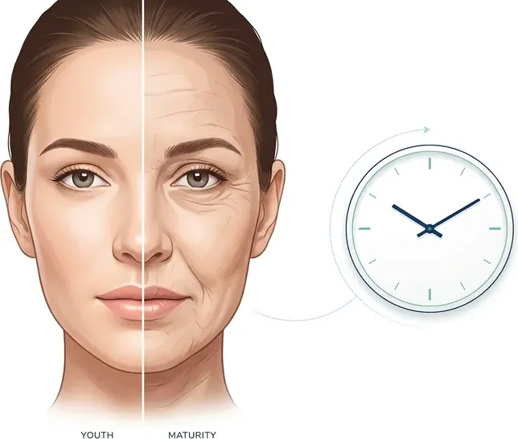
Then menopause hits — and the first real collapse happens.
That’s roughly 30% of your collagen gone in five years. This is the "my face changed overnight" moment.
After that comes the slow bleed: about 2% more every year, with almost nothing being rebuilt — because your body has all but stopped producing it.
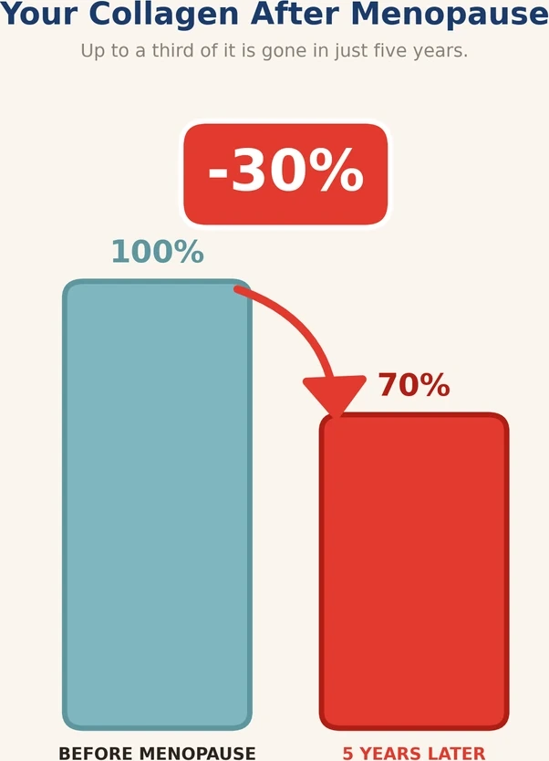
These aren’t fine lines anymore. It’s sagging, jowls, a hollow, deflated look.
But why does it get faster — not slower — the longer you wait?
There are two big reasons for that.
There’s less to build on.
Rebuilding a face whose foundation is still 80% intact is one thing.
Rebuilding one that’s halfway irrecoverable is far slower and far harder. There’s simply less to build upon.
Almost nobody tells you this — but your body doesn’t even try to fix your wrinkles.
As you age, it goes into rationing mode — and spends its limited energy on what keeps you alive: heart, brain, organs, repair.
The appearance of your skin?
To your body, that’s simply unnecessary. It goes to the very bottom of the list of priorities.
Your appearance matters to you… but not to your body.
And your body decides where the energy goes.
And this is why it’s so easy to wait too long.
The damage is silent. It doesn’t hurt. It doesn’t bleed. It doesn’t warn you.
The damaged collagen just quietly compounds under the surface.
Triggering enzymes that break down the healthy collagen next to it — so decay pulls more decay.
By the time you can clearly see it in the mirror, the structure has already been giving way for years.
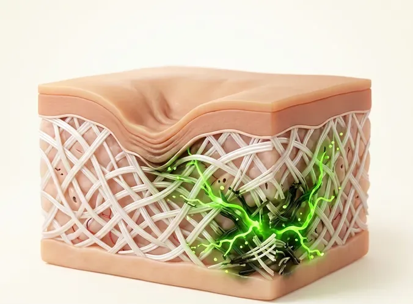
Doing nothing isn’t neutral. Doing nothing is choosing acceleration.
Women who wait all end up asking the same question a few years later:
"Why didn’t I start sooner — when there was still more left to save?"
Because the single most important factor here isn’t your age.
It’s how much you still have left to work with.
And that number gets a little smaller every single month you put this off.
Now for the good news.
Your skin’s foundation can be rebuilt.
Not with more surface creams.
Not with another single-source collagen your body just burns for fuel.
But with the one thing it’s been missing this whole time —
delivered in the exact form your body can finally use.
But to show you how that rebuilding really happens, let’s stop talking about foundations and bricks.
Your skin is soft. Alive. Woven.
And once you see it that way, the solution finally makes sense.
Now picture your skin as a fine piece of fabric — a beautifully woven silk, pulled tight and smooth.
The threads of that fabric are your collagen.
When you’re young, the weave is dense and springy: press it, and it snaps right back.
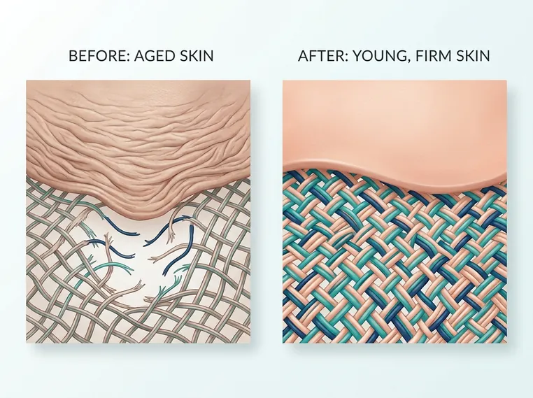
But as the threads thin and snap, the weave loosens.
That’s when you get the sagging, the lines, and that thin, "crepey" texture no foundation can hide.
(There’s a reason we call it crepe skin — it’s the weave coming undone.)
And here’s the thing that’s probably driven you crazy for years:
Why does the woman who does nothing —
Who sleeps in her makeup. Never touches a serum. Spends nothing on skincare.
Still have smooth, firm skin… while you’ve spent thousands and watched it slip away anyway?
It feels deeply unfair. But once you understand it, it’s actually the best news you’ll hear today.
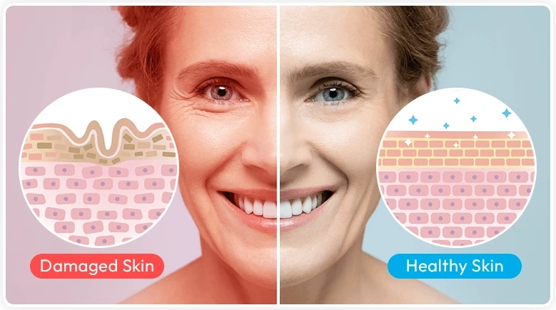
Because it was never about what those women put on their skin.
It’s what’s happening inside it. Their bodies are still weaving new collagen — still getting the raw materials and still doing the work.
Yours simply stopped. That’s the only difference. Not genes you’ll never have. Not a $500 cream you haven’t found.
Just whether your skin is being rebuilt from within or not.
And that is something you can finally give it.
To re-weave your skin, your body needs the full sewing kit: the right threads, a threaded needle, the hands to sew, and the order to begin.
That complete kit is exactly what’s been missing from everything you’ve tried.
The right threads — all 3 collagen types.
Your skin’s weave was never made of one thread. It needs:
- Type I — firmness
- Type III — that soft, youthful bounce
- Type II — the structural thread
And not from just any source. Rare Japanese Wagyu collagen, marine collagen, plus a hard-to-source Type II.
The threaded needle — ready-to-use peptides.
Collagen already broken into the exact size your body absorbs.
Zero energy wasted prepping it — so your body uses less energy re-weaving the collagen.
Less energy used, more chances of re-weaving the thread.
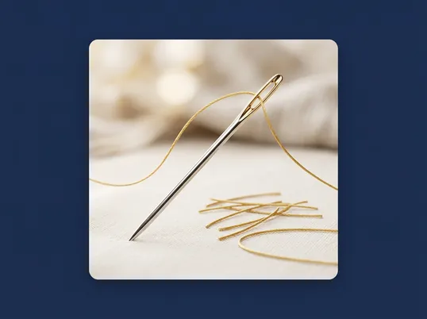
The order to begin — the start signal.
These peptides don’t just supply thread.
They act as a signal that wakes your fibroblasts and tells them to start weaving again.
That’s what finally answers "my body gave up rebuilding."
The hands to sew — the cofactors.
- Vitamin C — without it, your body physically cannot weave collagen
- Hyaluronic acid — to plump the weave back up with moisture
- Silica — to reinforce the threads
The rest of the kit your body stopped making — handed to it, which makes ALL the difference.
Put those four pieces together, and you’re doing something no other "solution" even attempts.
You see, almost everything else only works on the surface:
- Collagen that can’t penetrate — it just sits there
- Creams that coat the top of the weave, never the threads
- Fillers that plump one spot, temporarily
- Procedures that stitch here and there — while the rest keeps unraveling
- Silicones that mask the problem instead of fixing it
Every one of them manages the surface. None of them touch the cause.
This does the opposite — it re-weaves the whole fabric from within, with the exact threads, tools, and signal your skin uses to rebuild itself.
It goes after the real cause — an unraveling weave, an incomplete kit, and a body that stopped trying — not the surface.
Remember the woman who does nothing and still looks great — the one who spends nothing while you’ve spent thousands?
Here’s the truth: she isn’t lucky, and she doesn’t have secret genes you’ll never have. Her body simply still has the kit. It’s still weaving.
That was always the only difference between her skin and yours.
Not a serum. Not a $500 cream.
Just whether the weave was being rebuilt from the inside — or left to unravel.
And this is the part that changes everything: you no longer have to hope your body still has the kit.
And for the first time, you can hand it the complete kit yourself — every single morning.
It all now exists in one place.
All measured, all matched, all in a single scoop a day.
And it has a name.
30-Day Money-Back Guarantee · Free shipping on your 1st order
It’s called Renuvia.
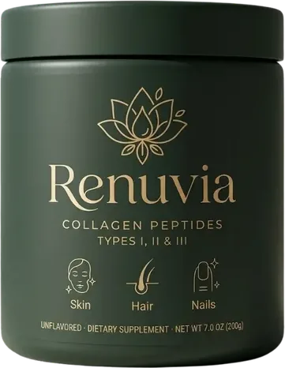
It’s everything your body has been shouting it needs.
Everything your skin has been missing to re-weave itself — finally in an easy-to-consume way.
One scoop a day. Unflavored. Stir it into your coffee, water, or smoothie — that’s all it takes.
What’s inside?
- Collagen Peptides Type I, II & III — including rare Japanese Wagyu Collagen Peptide and Marine Collagen Peptide
- Vitamin C from acerola
- Hyaluronic acid & silica
Made and tested in the USA, in a cGMP-certified facility, third-party tested for purity.
- No needles
- No 12-step routine
- No appointments
- Just one scoop a day
Still got questions? You’re not alone.
These women had these same questions before using Renuvia.
"But I’ve tried collagen and it did nothing."
Of course it did nothing — it was single-source, with none of the cofactors.
It was a loose thread with no needle and no hands: your body had nothing to sew with, so it broke the thread down and threw it away.
It’s not that collagen doesn’t work. It’s that you were handed one thread — and none of the rest of the kit.
"Can’t I just get this from food?"
In theory, yes. In practice, you’d have to eat an absurd amount every single day.
1 lb of fish with the skin. 1 lb of beef. Nearly a pound of chicken with the skin and cartilage. And around 8 oranges.
Nobody sustains that. One scoop condenses into a spoon what would take an impossible plate every day.
"Aren’t I too far gone?"
No. There’s still fabric to re-weave — and the sooner you start, the more thread there is to save.
The best day to start was yesterday. The second-best is today.
"This sounds too good to be true."
It’s not a miracle — it’s just logic.
Vitamin C is required biochemistry for building collagen. The peptides act as a signal.
It’s third-party tested. No magic — just the complete kit finally in one place.
"Is it a hassle? Does it taste bad?"
Unflavored, one scoop, mixes into anything.
No fishy taste, no regimen, no new habits. It slips into the coffee you already drink.
"Is it safe? What’s in it?"
Clean and transparent: no soy, no gluten, no shellfish.
Made in the USA, cGMP-certified, third-party tested.
Nothing sketchy, nothing hidden.
Here’s the honest timeline of what re-weaving actually looks like:
This isn’t a filter. It’s a real, gradual rebuilding.
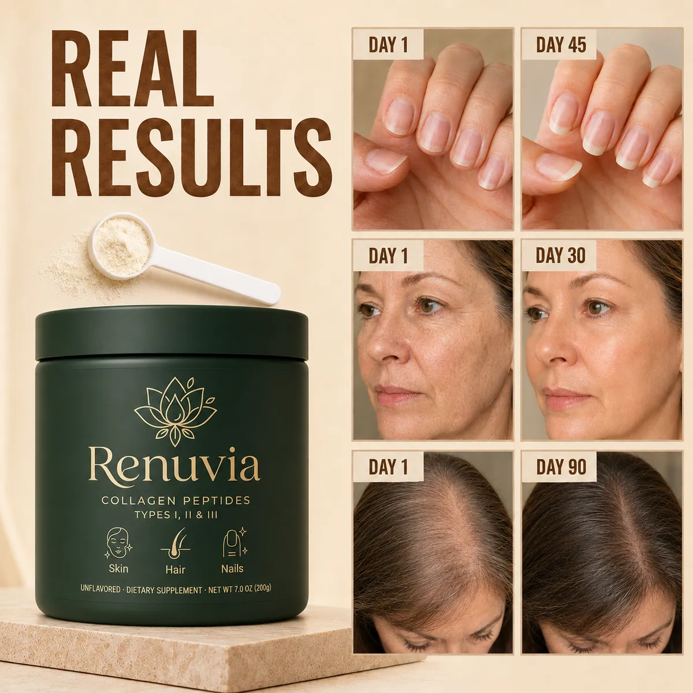
The ritual
One scoop in your morning coffee, every day. That’s it.
And it’s easy to keep up, because there’s nothing you need to change in your routine.
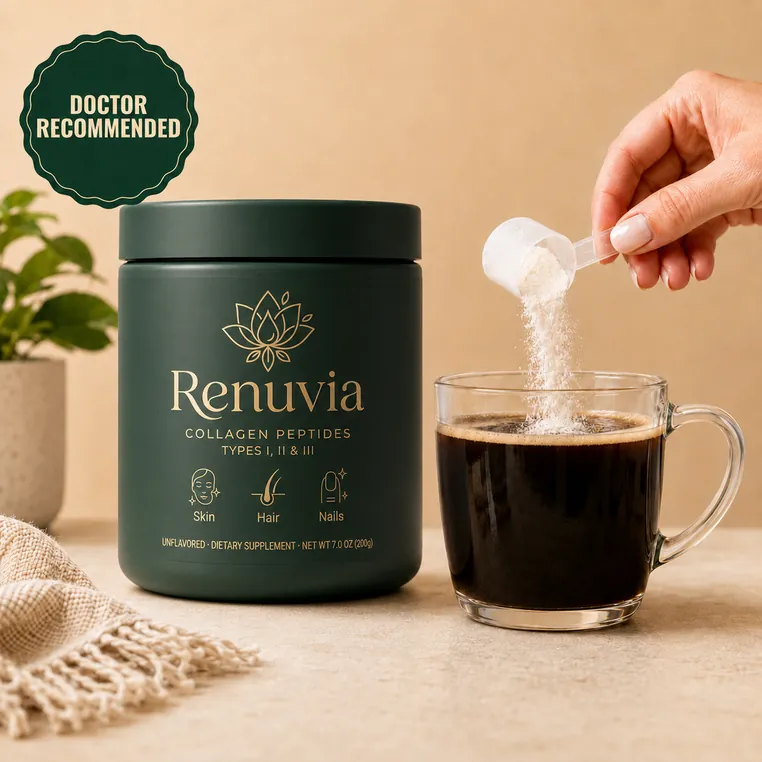
You don’t have to accept and watch your face keep falling, hollowing, and turning into someone you don’t recognize.
That isn’t your destiny — and you can start turning it around today.
30-Day Money-Back Guarantee · Free shipping on your 1st order
You have three choices from here on out.
Choice 1
You can do nothing — and watch your skin keep losing its structure, month after month, until one day the mirror stops feeling like you.
Choice 2
You can keep doing what hasn’t worked — throwing money at another single-source collagen or another $80 cream, and getting the same nothing you’ve gotten so far.
Choice 3 — start here
Or you can finally give your skin the exact things it’s been missing to rebuild itself — and try it for a full 30 days, on us.
Because that’s what Renuvia is all about:
- Not one more collagen — but the complete kit.
- All 3 collagen types, plus the cofactors that switch your own collagen production back on.
- One scoop a day. That’s the whole routine.
Here’s the part that surprises most women: what a jar like this actually costs.
When Renuvia hits store shelves, my supplier tells me it will retail for around $79.99.
A fair price when you consider how expensive and slow it is to source premium Wagyu and marine collagen, the rare Type II, and the full cofactor complex — all in one jar.
But because you’ve read this entire report — and I know you’re serious about rebuilding your skin —
I’ve asked our team to dramatically lower the price of Renuvia, for a brief window only.
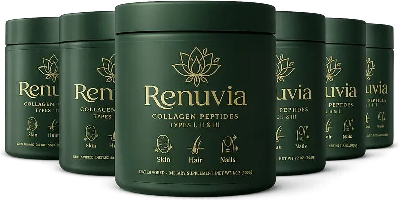
Order today, through this page, and Renuvia is yours for just
Choose Your Plan
Renuvia · Unflavored · 30 servings per jar
Your discount expires in 09:59
93% of this batch is claimed — only a handful of jars left
Subscribe & Save
Ships monthly · pause or cancel anytime
$39.99$79.99
$1.43/day
- 25% Off Every Order
- Free Shipping Today
$39.99 today, then $59.99 every 4 weeks · pause or cancel anytime.
One-time purchase
Ships once · no commitment
$59.99$79.99
$2.86/day
- No free shipping or discount
- Second order at full price
Try it risk-free for 30 days. Love your skin or every cent back — even an empty jar. No questions asked.
Secure checkout · 30-Day Money-Back Guarantee · Free shipping on your first order
Why most women choose Subscribe & Save
Now let me tell you why most women choose the Subscribe & Save option:
- Your best price — 25% off every order, locked in.
- A full 30-day trial — your subscription ships every 4 weeks and you can cancel anytime.
- Total flexibility — pause, skip, or cancel anytime, in one click. No lock-in, no phone calls.
- Free shipping on your first order.
And you’re not risking anything to find out.
If you don’t love how your skin looks and feels, you’re fully covered.
But more on that in a second.
Our promise to you
Try Renuvia for a full 30 days. If you don’t love how your skin looks and feels — even after finishing the entire jar — just contact our US-based support team and we’ll refund every cent. No questions asked.
But just in case you’re still having doubts, here’s what women who’ve tried Renuvia have to say.
★★★★★
People think I’m 20 years younger
"I’m so grateful for this. I’m 73. Lately people keep guessing I’m in my early 50s. I can see the difference in my face — the loose skin under my chin has firmed up so much, and the lines around my mouth have softened. I stir one scoop into my coffee every morning and I’m never stopping. Thank you."
★★★★★
Wish I’d started sooner!
"It mixes right into my morning coffee and I can’t taste a thing. I’m 64 and honestly amazed — my skin feels firmer and looks smoother than it has in years. When you see those lines start to soften, you’ll be amazed too. I only wish I’d found this sooner!"
★★★★★
My confidence is finally back
"After a hard couple of years I’d basically given up on my skin — nothing I tried did anything. A friend told me about Renuvia and every week I keep noticing more. I’m 56 now and feel better about how I look than I did in my 40s."
★★★★★
Glowing after just a couple weeks
"I took a photo the first day to compare. A little over two weeks in, my skin looks so much more awake and hydrated — it actually glows, and friends have started asking what I’m doing differently. I’ve finally found what works."
★★★★★
My one non-negotiable now
"I love this. It’s the only thing that’s ever made my skin feel this smooth and plump, and it’s one easy scoop a day. I don’t have to do a whole routine to see it working. It’s absolutely become my one non-negotiable every morning."
Before you close this page, be clear about what you’d actually be deciding.
Two clocks are running against you right now — and both only move one way.
The first clock: your skin
It doesn’t hold where it is while you think it over. Every month you wait, the more it sags and wrinkles.
There is no "pause" button — only slowing it down, or letting it speed up.
So the same scoop that rebuilds today will have to work harder to rebuild a year from now.
Every single day you put this off is another day added before you see the face you want in the mirror.
If you want to look and feel your best by summer, by an event, by the holidays — the clock says start now.
The second clock: supply
Renuvia isn’t cheap or fast to make.
Premium Japanese Wagyu and marine collagen, the rare Type II, and the full cofactor complex mean every batch is small and slow to produce. Quality like this simply doesn’t scale quickly.
When a run sells out, the next one is 6 months away — and waiting for the next batch is weeks of collagen quietly lost that you don’t get back.
Today’s price only exists for this batch, through this page. When it’s gone, it returns to $79.99.
Now picture two futures
Picture the mirror 90 days from now: firmer cheeks, softer lines, that rested look — a face that finally matches how young you still feel.
That version of you starts with one scoop tomorrow morning.
Or picture closing this page and changing nothing — and both clocks simply keep running.
Both versions of you start with the decision you make right now.
And you’re not risking a cent to find out.
If you don’t love what you see, the 30-day guarantee covers you completely.
The only real risk here is doing nothing — and letting both clocks run.
This is where you decide which mirror you’ll be looking into a year from now.
Firmer skin. Softer lines. A face that finally matches how young you still feel.
It doesn’t start with a facelift, a needle, or a $500 cream — it starts with one scoop tomorrow morning.
Choose your package below and get started with Renuvia today.
You’re fully covered by our 30-day money-back guarantee.
The ONLY way to lose is to do nothing.
But don’t wait: once this batch sells out, today’s price is gone and the next run is 6 months away.
Your skin has been waiting to be rebuilt. Starting tomorrow morning, you can finally give it the full set.
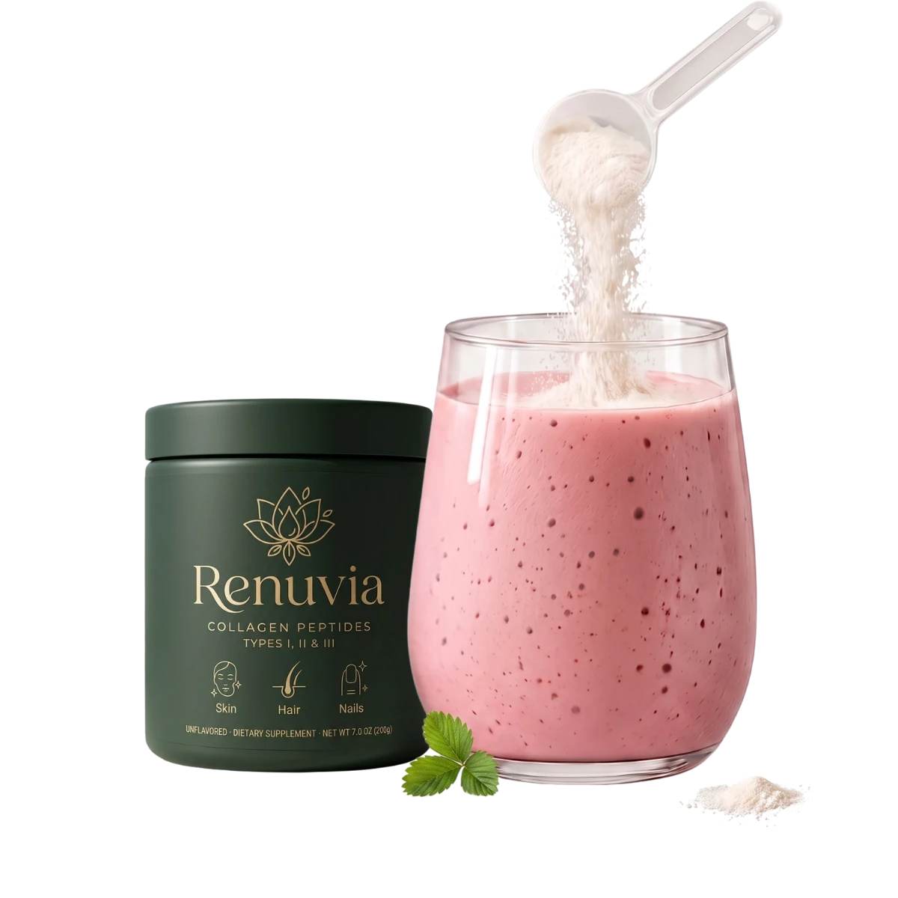
Choose Your Plan
Your discount expires in 09:59
93% of this batch is claimed — only a handful of jars left
Subscribe & Save
Ships monthly · pause or cancel anytime
$39.99$79.99
$1.43/day
- 25% Off Every Order
- Free Shipping Today
$39.99 today, then $59.99 every 4 weeks · pause or cancel anytime.
One-time purchase
Ships once · no commitment
$59.99$79.99
$2.86/day
- No free shipping or discount
- Second order at full price
Try it risk-free for 30 days. Love your skin or every cent back — even an empty jar. No questions asked.
Secure checkout · 30-Day Money-Back Guarantee · Free shipping on your first order
Frequently Asked Questions
Before we built this formula, we looked hard at what was already out there — and saw the same problem in almost every one. First, nearly all of them are single-source: one type of collagen, usually bovine, with none of the cofactors your body needs to actually use it. That’s a loose thread with no needle — your body just breaks it down and discards it. Second, most skip the very things that make collagen work: vitamin C, hyaluronic acid, silica.
Renuvia is different because it’s the complete kit: all three collagen types (rare Japanese Wagyu, marine, and a hard-to-source Type II), plus the cofactors that let your body re-weave its own collagen from within. It’s not one more collagen — it’s the whole system. Made and tested in the USA in a cGMP-certified facility, and third-party tested for purity.
Because Renuvia works from the inside out — giving your body the materials to rebuild collagen — it isn’t tied to a "skin type" the way a cream is. It’s made with clean ingredients: no soy, no gluten, no shellfish. As with any supplement, if you’re pregnant, nursing, or managing a health condition, check with your doctor first. And if it’s not right for you for any reason, you’re covered by our 30-day money-back guarantee.
This is real rebuilding, so it’s gradual — and honest expectations matter. Most women notice their skin feeling more hydrated and that tight, crepey texture softening within the first 1–2 weeks. Around week 4, fine lines tend to look less deep and makeup goes on smoother. By weeks 8–12, that’s when firmer-looking cheeks and jawline usually show, and that "tired" look starts to fade. Our tip: take a "before" photo on day one — around week 8 the change is much easier to see.
It couldn’t be simpler. One scoop a day. It’s unflavored, so just stir it into your coffee, water, or a smoothie — whatever you already drink. That’s the entire routine. No needles, no 12-step regimen, no appointments. The only thing that matters is consistency: one scoop, every day, is what keeps the weave rebuilding.
Then you don’t pay. We believe every woman can benefit from giving her skin the complete kit — but everyone’s body is different, and we’d never want you charged for something you didn’t love. If you’re unsatisfied for any reason within 30 days, send it back — even an empty jar — and we’ll refund every cent. No questions asked. Our name is on the label, and we’re not willing to risk it.
Scroll up and choose the Subscribe & Save option — it’s the lowest price per jar and gives your skin the full 8-to-12-week window it needs to really show results. You lock in 25% off, you never run out, and you can pause or cancel anytime in one click. Just remember: this discount only exists on this page, and once this batch sells out, it’s gone.